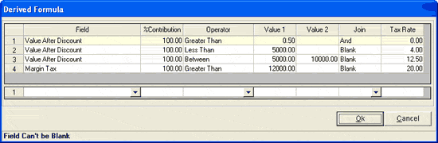

The Derived Formula window is as shown.

Field: Select Value After Discount, Value After Tax And Discount, Margin Tax, Sale Value or Tax Exclusive or MRP (Tax Inclusive), to specify how you want the tax to be computed.
%Contribution: Enter a percentage of the sales value, to be considered for computation of tax, as per the selected Field. If nothing is entered here then the default value is 100%.
Operator: Select Less Than, Greater Than, Equal, Between or Not. This will be compared with the value in %Contribution field.
Value1: Enter a value for first criterion.
Value2: Enter a value for upper limit if you have selected the operator Between.
Join: Select Blank, Or or And. Select Or/And if you want to specify another criterion for selection else select Blank to specify the tax rate.
Tax Rate: Enter the rate of tax to be applied, in case the Join selected is Blank.